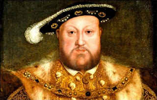
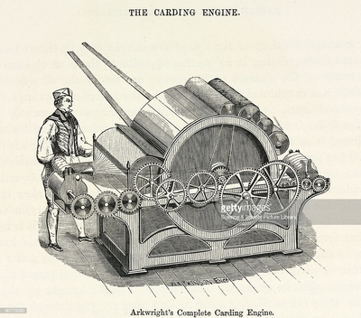
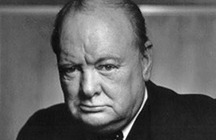

In this section you will learn about the historical events and people that have helped to shape the UK.
- Early Britain
- The Middle Ages
- The Tudors and Stuarts
- A Global Power
- The 20th century
- Britain since 1945
Early Britain
The first people to live in Britain were hunter-gatherers, in what we call the Stone Age.
For much of the Stone Age, Britain was connected to the continent by a land bridge. People came
and went, following the herds of deer and horses which they hunted. Britain only became permanently
separated from the continent by the Channel about 10,000 years ago.
The first farmers arrived in Britain 6,000 years ago. The ancestors of these first farmers probably
came from south-east Europe. These people built houses, tombs and monuments on the land. One of these
monuments, Stonehenge, still stands in what is now the English county of Wiltshire. Stonehenge was probably a
special gathering place for seasonal ceremonies. Other Stone Age sites have also survived. Skara Brae on Orkney,
off the north coast of Scotland, is the best preserved prehistoric village in northern Europe, and has helped
archaeologists to understand more about how people lived near the end of the Stone Age.
Around 4,000 years ago, people learned to make bronze. We call this period the Bronze Age. People
lived in roundhouses and buried their dead in tombs called round barrows. The people of the Bronze
Age were accomplished metalworkers who made many beautiful objects in bronze and gold, including
tools, ornaments and weapons. The Bronze Age was followed by the Iron Age, when people learned how to
make weapons and tools out of iron. People still lived in roundhouses grouped together into larger
settlements, and sometimes defended sites called hill forts. A very impressive hill fort can still
be seen today at Maiden Castle, in the English county of Dorset. Most people were farmers, craft
workers or warriors. The language they spoke was part of the Celtic language family. Similar languages
were spoken across Europe in the Iron Age and related languages are still spoken today in some parts of
Wales, Scotland and Ireland. The people of the Iron Age had a sophisticated culture and economy.
They made the first coins to be minted in Britain, some inscribed with the names of Iron Age kings.
This marks the beginnings of British history.
The Romans
Julius Caesar led a Roman invasion of Britain in 55 BC. This was unsuccessful and for nearly 100
years Britain remained separate from the Roman Empire. In AD 43 the Emperor Claudius led the Roman army
in a new invasion. This time, there was resistance from some of the British tribes but the Romans were successful
in occupying almost all of Britain. One of the tribal leaders who fought against the Romans was Boudicca, the queen
of the Iceni in what is now eastern England. She is still remembered today and there is a statue of her on
Westminster Bridge in London, near the Houses of Parliament.
Areas of what is now Scotland were never conquered by the Romans, and the Emperor Hadrian built a wall in the north
of England to keep out the Picts (ancestors of the Scottish people). Included in the wall were a number of forts.
Parts of Hadrian’s Wall, including the forts of Housesteads and Vindolanda, can still be seen. It is a popular area
for walkers and is a UNESCO (United Nations Educational Scientific and Cultural Organization) World Heritage Site.
The Romans remained in Britain for 400 years. They built roads and public buildings, created a structure of law, and
introduced new plants and animals. It was during the 3rd and 4th centuries AD that the first Christian communities began to appear in Britain.
The Anglo-Saxons
The Roman army left Britain in AD 410 to defend other parts of the Roman Empire and never returned. Britain was again invaded by
tribes from northern Europe: the Jutes, the Angles and the Saxons. The languages they spoke are the basis of modern-day English.
Battles were fought against these invaders but, by about AD 600, Anglo-Saxon kingdoms were established in Britain. These kingdoms
were mainly in what is now England. The burial place of one of the kings was at Sutton Hoo in modern Suffolk. This king was buried with
treasure and armour, all placed in a ship which was then covered by a mound of earth. Parts of the west of Britain, including much of what
is now Wales, and Scotland, remained free of Anglo-Saxon rule.
The Anglo-Saxons were not Christians when they first came to Britain but, during this period, missionaries came to Britain to preach about
Christianity. Missionaries from Ireland spread the religion in the north. The most famous of these were St Patrick, who would become the
patron saint of Ireland, and St Columba, who founded a monastery on the island of Iona, off the coast of what is now Scotland. St Augustine
led missionaries from Rome, who spread Christianity in the south. St Augustine became the first Archbishop of Canterbury.
The Vikings
The Vikings came from Denmark and Norway. They first visited Britain in AD 789 to raid coastal towns and take away goods and slaves.
Then, they began to stay and form their own communities in the east of England and Scotland. The Anglo-Saxon kingdoms in England united under
King Alfred the Great, who defeated the Vikings. Many of the Viking invaders stayed in Britain – especially in the east and north of England in
an area known as the Danelaw (many place names there, such as Grimsby and Scunthorpe come from the Viking languages). The Viking settlers mixed
with local communities and some converted to Christianity.
Anglo-Saxon kings continued to rule what is now England, except for a short period when there were Danish kings.
The first of these was Cnut, also named Canute.
In the north, the threat of attack by Vikings had encouraged the people to unite under one king, Kenneth MacAlpin.
The term Scotland began to be used to describe that country.
The Norman Conquest
In 1066, an invasion led by William, the Duke of Normandy (in what is now northern France), defeated Harold,
the Saxon king of England, at the Battle of Hastings. Harold was killed in the battle. William became king of
England and is known as William the Conqueror. The battle is commemorated in a great piece of embroidery, known
as the Bayeux tapestry, which can still be seen in France today.

The Bayeux Tapestry is 70m (230ft) long
The Norman Conquest was the last successful foreign invasion of England and led to many changes
in government and social structures in England. Norman French, the language of the new ruling
class influenced the development of the English language as we know it today. Initially the
Normans also conquered Wales, but the Welsh gradually won territory back. The Scots and the
Normans fought on the border between England and Scotland; the Normans took over some land on
the border but did not invade Scotland.
William sent people all over England to draw up lists of all the towns and villages.
The people who lived there, who owned the land and what animals they owned were also
listed. This was called the Domesday Book. It still exists today and gives a picture
of society in England just after the Norman Conquest.
Check that you understand:
The Middle Ages
War at home and abroad
The period after the Norman Conquest up until about 1485 is called the Middle Ages
(or the medieval period). It was a time of almost constant war. The English kings
fought with the Welsh, Scottish and Irish noblemen for control of their lands.
In Wales, the English were able to establish their rule. In 1284 King Edward I of
England introduced the Statute of Rhuddlan, which annexed Wales to the Crown of
England. Huge castles, including Conwy and Caenarvon, were built to maintain
this power. By the middle of the 15th century the last Welsh rebellions had been
defeated. English laws and the English language were introduced.
In Scotland, the English kings were less successful. In 1314 the Scottish,
led by Robert the Bruce, defeated the English at the Battle of Bannockburn,
and Scotland remained unconquered by the English.
At the beginning of the Middle Ages, Ireland was an independent country. The
English first went to Ireland as troops to help the Irish king and remained to
build their own settlements. By 1200, the English ruled an area of Ireland known
as the Pale, around Dublin. Some of the important lords in other parts of Ireland
accepted the authority of the English king.
During the Middle Ages, the English kings also fought a number of wars abroad.
Many knights took part in the Crusades, in which European Christians fought for
control of the Holy Land. English kings also fought a long war with France, called
the Hundred Years War (even though it actually lasted 116 years). One of the most
famous battles of the Hundred Years War was the Battle of Agincourt in 1415, where
King Henry V’s vastly outnumbered English army defeated the French.
The English left France in the 1450s.
The Black Death
The Normans used a system of land ownership known as feudalism. The king gave land to his lords
in return for help in war. Landowners had to send certain numbers of men to serve in the army.
Some peasants had their own land but most were serfs. They had a small area of their lord’s
land where they could grow food. In return, they had to work for their lord and could not move
away. The same system developed in southern Scotland. In the north of Scotland and Ireland,
land was owned by members of the ‘clans’ (prominent families).
In 1348, a disease, probably a form of plague, came to Britain. This was known as the Black Death.
One third of the population of England died and a similar proportion in Scotland and Wales. This was
one of the worst disasters ever to strike Britain. Following the Black Death, the smaller population
meant there was less need to grow cereal crops. There were labour shortages and peasants began to
demand higher wages. New social classes appeared, including owners of large areas of land (later called the gentry),
and people left the countryside to live in the towns. In the towns, growing wealth led to the development of a
strong middle class.
In Ireland, the Black Death killed many in the Pale and, for a time, the area controlled by the English
became smaller.
Legal and political changes
In the Middle Ages, Parliament began to develop into the institution it is today. Its origins can be
traced to the king’s council of advisers, which included important noblemen and the leaders of the Church.
There were few formal limits to the king’s power until 1215. In that year, King John was forced
by his noblemen to agree to a number of demands. The result was a charter of rights called the
Magna Carta (which means the Great Charter). The Magna Carta established the idea that even the
king was subject to the law. It protected the rights of the nobility and restricted the king’s
power to collect taxes or to make and change laws. In future, the king would need to involve his
noblemen in decisions.
In England, parliaments were called for the king to consult his nobles, particularly when the
king needed to raise money. The numbers attending Parliament increased and two separate parts,
known as Houses were established. This nobility, great landowners and bishops sat in the House
of Lords. Knights, who were usually smaller landowners, and wealthy people from towns and cities
were elected to sit in the House of Commons. Only a small part of the population was able to
join in electing the members of the Commons.
A similar Parliament developed in Scotland. It had three Houses, called Estates: the lords,
the commons and the clergy.
This was also a time of development in the legal system. The principle that judges are
independent of the government began to be established. In England, judges developed
‘common law’ by a process of precedence (that is, following previous decisions) and
tradition. In Scotland, the legal system developed slightly differently and laws were
‘codified’ (that is, written down).
A distinct identity
The Middle Ages saw the development of a national culture and identity. After the Norman Conquest,
the king and his noblemen had spoken Norman French and the peasants had continued to speak Anglo-Saxon.
Gradually these two languages combined to become one English language. Some words in modern English –
for example, ‘park’ and ‘beauty’ – are based on Norman French words. Other – for example, ‘apple’,
‘cow’ and ‘summer’ – are based on Anglo-Saxon words. In modern English there are often two words
with very similar meanings, one from French and one from Anglo-Saxon. ‘Demand’ (French) and ‘ask’
(Anglo-Saxon) are examples. By 1400, in England, official documents were being written in English,
and English had become the preferred language of the royal court and Parliament.
In the years leading up to 1400, Geoffrey Chaucer wrote a series of poems in English about a
group of people going to Canterbury on a pilgrimage. The people decided to tell each other stories
on the journey, and the poems describe the travellers and some of the stories they told. This
collection of poems is called The Canterbury Tales. It was one of the first books to be printed
by William Caxton, the first person in England to print books using a printing press. Many of the
stories are still popular. Some have been made into plays and television programmes.
In Scotland, many people continued to speak Gaelic and the Scots language also developed. A
number of poets began to write in the Scots language. One example is John Barbour, who wrote The
Bruce about the Battle of Bannockburn.
The Middle Ages also saw a change in the type of buildings in Britain. Castles were built in many
places in Britain and Ireland, partly for defence. Today many are in ruins, although some, such as
Windsor and Edinburgh, are still in use. Great cathedrals – for example, Lincoln Cathedral –
were also built, and many of these are still used for worship. Several of the cathedrals had
windows of stained glass, telling stories about the Bible and Christian saints. The glass in
York Minster is a famous example.
During this period, England was an important trading nation. English wool became a very
important export. People came to England from abroad to trade and also to work. Many had
special skills, such as weavers from France, engineers from Germany, glass manufacturers
from Italy and canal builders from Holland.

This is one of the 105 panels from York Minster's St William Window
The Wars of the Roses
In 1455, a civil war was begun to decide who should be king of England. It was
fought between the supporters of two families: the House of Lancaster and the House
of York. This war was called the Wars of the Roses, because the symbol of Lancaster was a
red rose and the symbol of York was a white rose. The wars ended with the Battle of Bosworth
Field in 1485. King Richard III of the House of York was killed in the battle and Henry Tudor,
the leader of the House of Lancaster, became King Henry VII. Henry then married King Richard’s
niece, Elizabeth of York, and united the two families. Henry was the first king of the House of
Tudor. The symbol of the House of Tudor was a red rose with a white rose inside it as a sign that
the Houses of York and Lancaster were now allies.
Check that you understand:
The Tudors and Stuarts
Religious conflicts
After his victory in the Wars of the Roses, Henry VII wanted to make sure
that England remained peaceful and that his position as king was secure.
He deliberately strengthened the central administration of England and reduced the
power of the nobles. He was thrifty and built up the monarchy’s financial reserves.
When he died, his son Henry VIII continued the policy of centralising power.
Henry VIII was most famous for breaking away from the Church of Rome and marrying six times.

Henry, the second son of King Henry VII and Elizabeth of York,
was born on 28 June 1491 at Greenwich Palace
The six wives of Henry VIII
Catherine of Aragon
– Catherine was a Spanish princess. She and Henry had a number of children but only one, Mary, survived. When Catherine was too old to give him another child, Henry decided to divorce her, hoping that another wife would give him a son to be his heir.
Anne Boleyn
– Anne Boleyn was English. She and Henry had one daughter, Elizabeth. Anne was unpopular in the country and was accused of taking lovers. She was executed at the tower of London.
Jane Seymour
– Henry married Jane after Anne’s execution. She gave Henry the son he wanted, Edward, but she died shortly after his birth.
Anne of Cleves
– Anne was a German princess. Henry married her for political reasons but divorced her soon after.
Catherine Howard
– Catherine was a cousin of Anne Boleyn. She was also accused of taking lovers and executed.
Catherine Parr
– Catherine was a widow who married Henry later in his life. She survived him and married again but died soon after.
To divorce his first wife, Henry needed the approval of the Pope. When the Pope refused, Henry established
the church of England. In this new church, the king, not the Pope, would have the power to appoint bishops
and order how people should worship.
At the same time the Reformation was happening across Europe. This was a movement against the authority
of the Pope and the ideas and practices of the Roman Catholic Church. The Protestants formed their own
churches. They read the Bible in their own languages instead of Latin; they did not pray to saints or
at shrines; and they believed that a person’s own relationship with God was more important than
submitting to the authority of the Church. Protestant ideas gradually gained strength in England,
Wales and Scotland during the 16th century.
In Ireland, however, attempts by the English to impose Protestantism (alongside efforts to introduce
the English system of laws about the inheritance of land) led to rebellion from the Irish chieftains,
and much brutal fighting followed.
During the reign of Henry VIII, Wales became formally united with England by the Act for the Government
of Wales. The Welsh sent representatives to the House of Commons and the Welsh legal system was reformed.
Henry VIII was succeeded by his son Edward VI, who was strongly Protestant. During his reign, the Book
of Common Prayer was written to be used in the Church of England. A version of this book is still used
in some churches today. Edward died at the age of 15 after ruling for just over six years, and his
half-sister Mary became queen. Mary was a devout Catholic and persecuted Protestants (for this reason,
she became known as ‘Bloody Mary’). Mary also died after a short reign and the next monarch was her
half-sister, Elizabeth, the daughter of Henry VIII and Anne Boleyn.
Queen Elizabeth I
Elizabeth I was the younger daughter of Henry VIII. Queen Elizabeth I was a Protestant. She re-established
the Church of England as the official Church of England. Everyone had to attend their local church
and there were laws about the type of religious services and the prayers which could be said,
but Elizabeth did not ask about people’s real beliefs. She succeeded in finding a balance between
the views of the Catholics and the more extreme Protestants. In this way, she avoided any serious
religious conflict within England. Elizabeth became one of the most popular monarchs in English
history, particularly after 1588, when the English defeated the Spanish Armada (a large fleet of
ships), which had been sent by Spain to conquer England and restore Catholicism.
The Reformation in Scotland and Mary, Queen of Scots
Scotland had also been strongly influenced by Protestant ideas. In 1560, the predominantly Protestant
Scottish Parliament abolished the authority of the Pope in Scotland and Roman Catholic religious
services became illegal. A Protestant Church of Scotland with an elected leadership was established
but, unlike in England, this was not a state Church.
The queen of Scotland, Mary Stuart (often now called ‘Mary, Queen of Scots’) was a Catholic.
She was only a week old when her father died and she became queen. Much of her childhood was
spent in France. When she returned to Scotland, she was the centre of a power struggle between
different groups. When her husband was murdered, Mary was suspected of involvement and fled to
England. She gave her throne to her Protestant son, James VI of Scotland. Mary was Elizabeth I’s
cousin and hoped that Elizabeth might help her, but Elizabeth suspected Mary of wanting to take over
the English throne, and kept her prisoner for 20 years. Mary was eventually executed, accused of
plotting against Elizabeth I.
Exploration, poetry and drama
The Elizabethan period in England was a time of growing patriotism: a feeling of pride in being
English, English explorers sought new trade routes and tried to expand British trade into the
Spanish colonies in the Americas. Sir Francis Drake, one of the commanders in the defeat of the
Spanish Armada, was one of the founders of England’s naval tradition. His ship, the Golden Hind,
was one of the first to sail right around (‘circumnavigate’) the world. In Elizabeth I’s
time, English settlers first began to colonise the eastern coast of America. This colonisation,
particularly by people who disagreed with the religious views of the next two kings, greatly
increased in the next century.
The Elizabethan period is also remembered for the richness of its poetry and drama, especially
the plays and poems of William Shakespeare.
William Shakespeare (1564-1616)
Shakespeare was born in Stratford-upon-Avon, England. He was a playwright and actor and wrote many poems
and plays. His most famous plays include A Midsummer Night’s dream, Hamlet, Macbeth and Romeo and
Juliet. He also dramatised significant events from the past, but he did not focus solely on kings
and queens. He was one of the first to portray ordinary Englishmen and women. Shakespeare had a
great influence on the English language and invented many words that are still common today. Lines
from his plays and poems which are often still quoted include:

William Shakespeare, also known as the "Bard of Avon," is often called England's national
poet and considered the greatest dramatist of all time
Many people regard Shakespeare as the greatest playwright of all time. His plays and poems are
still performed and studied in Britain and other countries today. The Globe Theatre in
London is a modern copy of the theatres in which his plays were first performed.
James VI and I
Elizabeth I never married and so had no children of her own to inherit her throne. When
she died in 1603 her heir was her cousin James VI of Scotland. He became King James I of
England, Wales and Ireland but Scotland remained a separate country.
The King James Bible
One achievement of King James’ reign was a new translation of the Bible into English.
This translation is known as the ‘King James Version’ or the ‘Authorised Version’.
It was not the first English Bible but is a version which continues to be used in
many Protestant churches today.
Ireland
During this period, Ireland was an almost completely Catholic country.
Henry VII and Henry VIII had extended English control outside the Pale and had
established English authority over the whole country. Henry VIII took the title ‘King of Ireland’.
English laws were introduced and local leaders were expected to follow the instructions of the
Lord Lieutenants in Dublin.
During the reigns of Elizabeth I and James I, many people in Ireland opposed rule by the Protestant
government in England. There were a number of rebellions. The English government encouraged Scottish
and English Protestants to settle in Ulster, the northern province of Ireland, taking over the land
from Catholic landholders. These settlements were known as plantations. Many of the new settlers came
from south-west Scotland and other land was given to companies based in London. James later organised
similar plantations in several other parts of Ireland. This had serious longterm consequence for the
history of England, Scotland and Ireland.
The rise of Parliament
Elizabeth I was very skilled at managing Parliament. During her reign, she was successful in
balancing her wishes and views against those of the House of Lords and those of the House of
Commons, which was increasingly Protestant in its views.
James I and his son Charles I were less skilled politically. Both believed in the ‘Divine Right of Kings’:
the idea that the king was directly appointed by God to rule. They thought that the king should be
able to act without having to seek approval from Parliament. When Charles I inherited the thrones
of England, Wales, Ireland and Scotland, he tried to rule in line with this principle. When he
could not get Parliament to agree with his religious and foreign policies, he tried to rule without
the Parliament at all. For 11 years, he found ways in which to raise money without Parliament’s
approval but eventually trouble in Scotland meant that he had to recall Parliament.
The beginning of the English Civil War
Charles I wanted the worship of the Church of England to include more ceremony and introduced a
revised Prayer Book. He tried to impose this Prayer Book on the Presbyterian Church in Scotland
and this led to serious unrest. A Scottish army was formed and Charles could not find the money he
needed for his own army without the help of Parliament. In 1640, he recalled Parliament to ask it
for funds. Many in Parliament were Puritans, a group of Protestants who advocated strict and simple
religious doctrine and worship. They did not agree with the king’s religious views and disliked his
reforms of the Church of England. Parliament refused to give the king the money he asked for, even
after the Scottish army invaded England.
Another rebellion began in Ireland because the Roman Catholics in Ireland were afraid of the
growing power of the Puritans. Parliament took this opportunity to demand control of the
English army – a change that would have transferred substantial power from the king to
Parliament. In response, Charles I entered the House of Commons and tried to arrest five
parliamentary leaders, but they had been warned and were not there. (No monarch has set
foot in the Commons since.) Civil war between the king and Parliament could not now be
avoided and began in 1642. The country split into those who supported the king (the Cavaliers)
and those who supported Parliament (the Roundheads).
Oliver Cromwell and the English republic
The king’s army was defeated at the Battles of Marston Moor and Naseby. By 1646, it was clear that the Parliament
had won the war. Charles was held prisoner by the parliamentary army. He was still unwilling to reach any
agreement with the Parliament and in 1649 he was executed.
England declared itself a republic, called the Commonwealth. It no longer had a monarch. For a time,
it was not totally clear how the country would be governed. For now, the army was in control. One of
its generals, Oliver Cromwell, was sent to Ireland, where the revolt which had begun in 1641 still
continued and where there was still a Royalist army. Cromwell was successful in establishing the
authority of the English Parliament but did this with such violence that even today Cromwell remains
a controversial figure in Ireland.
The Scots had not agreed to the execution of Charles I and declared his sonCharles II to be king.
He was crowned king of Scotland and led a Scottish army into England. Cromwell defeated this army in
the Battles of Dunbar and Worcester. Charles II escaped from Worcester, famously hiding in an oak tree
on one occasion, and eventually fled to Europe. Parliament now controlled Scotland as well as England and Wales.
After his campaign in Ireland and victory over Charles II at Worcester, Cromwell was recognised as the
leader of the new republic. He was given the title of Lord Protector and ruled until his death in 1658.
When Cromwell died, his son, Richard, became Lord Protector in his place but was not able to control the
army or the government. Although Britain had been a republic for 11 years, without Oliver Cromwell there
was no clear leader or system of government. Many people in the country wanted stability. People began to
talk about the need for a king.
The Restoration
In May 1660, Parliament invited Charles II to come back from exile in The Netherlands. He was
crowned King Charles II of England, Wales, Scotland and Ireland. Charles II made it clear that
he had ‘no wish to go on his travels again’. He understood that he could not always do as he
wished but would sometimes need to reach agreement with the Parliament. Generally, Parliament
supported his policies. The Church of England again became the established official Church. Both
Roman Catholics and Puritans were kept out of power.
During Charles II’s reign, in 1665, there was a major outbreak of plague in London. Thousands of
people died, especially in poorer areas. The following year, a great fire destroyed much of the
city, including many churches and St Paul’s Cathedral. London was rebuilt with a new St Paul’s,
which was designed by a famous architect, Sir Christopher Wren. Samuel Pepys wrote about these
events in a diary which was later published and is still read today.
The Habeas Corpus Act became law in 1679. This was a very important piece of legislation which
remains relevant today. Habeas corpus is Latin for ‘you must present the person in court’. The Act
guaranteed that no one could be held prisoner unlawfully. Every prisoner has a right to a court hearing.
Charles II was interested in science. During his reign, the Royal Society was formed to promote
‘natural knowledge’. This is the oldest surviving scientific society in the world. Among its early
members were Sir Edmund Halley who successfully predicted the return of the comet now called Halley’s
Comet, and Sir Isaac Newton.
Isaac Newton (1643-1727)
Born in Lincolnshire, eastern England, Isaac Newton first became interested in science
when he studied at Cambridge University. He became an important figure in the field.
His most famous published work was Philosophiae Naturalis Principia Mathematica
(‘Mathematical Principle of Natural Philosophy’), which showed how gravity applied
to the whole universe. Newton also discovered that white light is made up of the
colours of the rainbow. Many of his discoveries are still important for modern science.
A Catholic king
Charles II had no legitimate children. He died in 1685 and his brother, James, who was a
Roman Catholic, became King James II in England, Wales and Ireland and King James VII of Scotland.
James favoured Roman Catholics and allowed them to be army officers, which an Act of Parliament
had forbidden. He did not seek to reach agreements with Parliament and arrested some of the bishops
of the Church of England. People in England worried that James wanted to make England a Catholic
country once more. However, his heirs were his two daughters, who were both firmly Protestant,
and people thought that this meant there would soon be a Protestant monarch again. Then James’s
wife had a son. Suddenly, it seemed likely that the next monarch would not be a Protestant after all.
The Glorious Revolution
James II’s elder daughter, Mary, was married to her cousin William of Orange,
the Protestant ruler of the Netherlands. In 1688, important Protestants in England asked William to
invade England and proclaim himself king. When William reached England, there was no resistance.
James fled to France and William took over the throne, becoming William III in England, Wales and
Ireland, and William II of Scotland. William ruled jointly with Mary. This event was later called
the ‘Glorious Revolution’ because there was no fighting in England and because it guaranteed the
power of Parliament, ending the threat of monarch ruling on his or her own as he or she wished.
James II wanted to regain the throne and invaded Ireland with the help of a French army. William
defeated James II at the Battle of the Boyne in Ireland in 1690, an event which is still celebrated
by some in Northern Ireland today. William re-conquered Ireland and James fled back to France.
Many restrictions were placed on the Roman Catholic Church in Ireland and Irish Catholics were
unable to take part in the government.
There was also support for James in Scotland. An attempt at an armed rebellion in support of
James was quickly defeated at Killiecrankie. All Scottish clans were required formally to
accept William as king by taking an oath. The MacDonalds of Glencoe were late in taking an oath.
The memory of this massacre meant some Scots distrusted the new government.
Some continued to believe that James was the rightful king, particularly in Scotland. Some
joined him in exile in France; others were secret supporters. James’ supporters became known as Jacobites.
Check that you understand:
A global power
Constitutional monarchy – the Bill of Rights
At the coronation of William and Mary, a Declaration of Rights was read.
This confirmed that the king would no longer be able to raise taxes and administer
justice without agreement from Parliament. The balance of power between monarch and
Parliament had now permanently changed. The Bill of Rights, 1689, confirmed the rights
of Parliament and the limits of the king’s power. Parliament took control of who could
be monarch and declared that the king or queen must be a Protestant. A new Parliament
had to be elected at least every three years (later this became seven years and now it
is five years). Every year the monarch had to ask Parliament to renew funding for the
army and the navy.
These changes meant that, to be able to govern effectively, the monarch needed to
have advisers, or ministers, who would be able to ensure a majority of votes in
the House of Commons and the House of Lords. There were two main groups in Parliament,
known as the Whigs and the Tories. (The modern Conservative Party is still sometimes
referred to as the Tories.) This was the beginning of party politics.
This was also an important time for the development of a free press (newspapers and other
publications which are not controlled by the government). From 1695, newspapers were allowed
to operate without a government licence. Increasing numbers of newspapers began to be published.
The laws passed after the Glorious Revolution are the beginning of what is called
‘constitutional monarchy’. The monarch remained very important but was no longer
able to insist on particular policies or actions if Parliament did not agree.
After William III, the ministers gradually became more important than the monarch
but this was not a democracy in the modern sense. The number of people who had the
right to vote for members of Parliament was still very small. Only men who owned
property of a certain value were able to vote. No women at all had the vote.
Some constituencies were controlled by a single wealthy family. They were called
the ‘pocket boroughs’. Other constituencies had hardly any
voters and were called ‘rotten boroughs’.
A growing population
This was a time when many people left Britain and Ireland to settle in new colonies
in America and elsewhere, but others came to live in Britain. The first Jews to come
to Britain since the Middle Ages settled in London in 1656. Between 1680 and 1720 many
refugees called Huguenots came from France. They were Protestants and had been persecuted
for their religion. Many were educated and skilled and worked as scientists, in banking,
or in weaving or other crafts.
The Act or Treaty of Union in Scotland
William and Mary’s successor, Queen Anne, had no surviving children. This created uncertainty
over the succession in England, Wales and Ireland and in Scotland. The Act of Union, known as
the Treaty of Union in Scotland, was therefore agreed in 1707, creating the Kingdom of Great
Britain. Although Scotland was no longer an independent country, it kept its own legal and
education systems and Presbyterian Church.
The Prime Minister
When Queen Anne died in 1714, Parliament chose a German, George I, to be the next king,
because he was Anne’s nearest Protestant relative. An attempt by Scottish Jacobites to
put James II’s son on the throne instead was quickly defeated. George I did not speak
very good English and this increased his need to rely on his ministers. The most
important minister in Parliament became known as the Prime Minister. The first man
to be called this was Sir Robert Walpole, who was Prime Minister from 1721 to 1742.
The rebellion of the clans
In 1745 there was another attempt to put a Stuart king back on the throne in place of
George I’s son, George II. Charles Edward Stuart (Bonnie Prince Charlie),
the grandson of James II, landed in Scotland. He was supported by clansmen
from the Scottish highlands and raised and army. Charles initially had some
successes but was defeated by George II’s army at the Battle of Culloden in 1746.
Charles escaped back to Europe.
The clans lost a lot of their power and influence after Culloden. Chieftains became
landlords if they had the favour of the English king, and clansmen became tenants who
had to pay for the land they used.
A process began which became known as the ‘Highland Clearances’. Many Scottish
landlords destroyed individual small farms (known as ‘crofts’) to make space for
large flocks of sheep and cattle. Evictions became very common in the early 19th
century. Many Scottish people left for North America at this time.
Robert Burns (1759-96)
Known in Scotland as ‘The Bard’, Robert Burns was a Scottish poet. He wrote in the Scots language,
English with some Scottish words and standard English. He also revised a lot of the
traditional folk songs by changing or adding lyrics. Burns’ best-known work is
probably the song Auld Lang Syne, which is sung by people in the UK and other
countries when they are celebrating the New Year (or Hogmanay as it is called in Scotland).
The Enlightenment
During the 18th century, new ideas about politics, philosophy and science were developed.
This is often called ‘the Enlightenment’. Many of the great thinkers of the Enlightenment
were Scottish. Adam Smith developed ideas about economics which are still referred to today.
David Hume’s ideas about human nature continue to influence philosophers. Scientific discoveries,
such as James Watt’s work on steam power, helped the progress of the Industrial Revolution.
One of the most important principles of the Enlightenment was that everyone should have the
right to their own political and religious beliefs and that the state should not try to dictate
to them. This continues to be an important principle in the UK today.
The Industrial Revolution
Before the 18th century, agriculture was the biggest source of employment in Britain.
There were many cottage industries, where people worked from home to produce goods such as cloth and lace.
The Industrial Revolution was the rapid development of industry in Britain in the 18th
and 19th centuries. Britain was the first country to industrialise on a large scale.
It happened because of the development of machinery and the use of steam power.
Agriculture and the manufacturing of goods became mechanised. This made things more
efficient and increased production. Coal and other raw materials were needed to power
the new factories. Many people moved from the countryside and started working in the
mining and manufacturing industries.
The development of the Bessemer process for the mass production of steel led to the
development of the shipbuilding industry and the railways. Manufacturing jobs
became the main source of employment in Britain.
Richard Arkwright (1732-92)
Born in 1732, Arkwright originally trained and worked as a barber. He was able to
dye hair and make wigs. When wigs became less popular, he started to work in textiles.
He improved the original carding machine. Carding is the process of preparing fibres
for spinning into yarn and fabric. He also developed horse-driven spinning mills that
used only one machine. This increased the efficiency of production. Later, he used
the steam engine to power machinery. Arkwright is particularly remembered for the
efficient and profitable way that he ran his factories.

Engraving of Richard Arkwright's (1732-1792) carding machine, invented in 1775
Better transport links were needed to transport raw materials and manufactured goods.
Canals were built to link the factories to towns and cities and to the ports,
particularly in the new industrial areas in the middle and north of England.
Working conditions during the Industrial Revolution were very poor. There were no
laws to protect employees, who were often forced to work long hours in dangerous
situations. Children also worked and were treated in the same way as adults.
Sometimes they were treated even more harshly.
This was also a time of increased colonisation overseas. Captain James Cook
mapped the coast of Australia and a few colonies were established there.
Britain gained control over Canada, and the East India Company, originally
set up to trade, gained control of large parts of India. Colonies began to
be established in southern Africa.
Britain traded all over the world and began to import more goods. Sugar and
tobacco came from North America and the west Indies; textiles, tea and spices
came from India and the area that is today called Indonesia. Trading and
settlements overseas sometimes brought Britain into conflict with other countries,
particularly France, which was expanding and trading in a similar way in many of
the same areas of the world.
Sake Dean Mahomet (1759-1851)
Mahomet was born is 1759 and grew up in the Bengal region of India. He served in the
Bengal army and came to Britain in 1782. He then moved to Ireland and eloped with an
Irish girl called Jane Daly in 1786, returning to England at the turn of the century.
In 1810 he opened the Hindoostane Coffee House in George Street, London. It was the
first curry house to open in Britain. Mahomet and his wife also introduced ‘shampooing’,
the Indian art of head massage, to Britain.
The slave trade
This commercial expansion and prosperity was sustained in part by the booming slave trade.
While slavery was illegal within Britain itself, by the 18th century it was a fully
established overseas industry, dominated by Britain and the American colonies.
Slaves came primarily from West Africa. Travelling on British ships in horrible conditions,
they were taken to America and the Caribbean, where they were made to work on tobacco and
sugar plantations. The living and working conditions for slaves were very bad. Many slaves
tried to escape and others revolted against their owners in protest at their terrible treatment.
There were, however people in Britain who opposed the slave trade. The first formal anti-slavery
groups were set up by the Quakers in the late 1700s, and they petitioned Parliament to ban the
practice. William Wilberforce, an evangelical Christian and a member of Parliament, also played
an important part in changing the law. Along with other abolitionists (people who supported the
abolition of slavery), he succeeded in turning public opinion against the slave trade. In 1807,
it became illegal to trade slaves in British ships or from British ports, and in 1833 the
Emancipation Act abolished slavery throughout the British Empire. The Royal Navy stopped
slave ships from other countries, freed the slaves and punished the slave traders.
After 1833, 2 million Indian and Chinese workers were employed to replace the freed
slaves. They worked on sugar plantations in the Caribbean, in mines in South Africa,
on railways in East Africa and in the army in Kenya.
The American War of Independence
By the 1760s, there were substantial British colonies in North America.
The colonies were wealthy and largely in control of their own affairs. Many of
the colonist families had originally gone to North America in order to have religious
freedom. They were well educated and interested in ideas of liberty.
The British government wanted to tax the colonies. The colonists saw this as an
attack on their freedom and said there should be ‘no taxation without representation’
in the British Parliament. Parliament tried to compromise by repealing some of the taxes,
but relationships between the British government and the colonies continued to worsen.
Fighting broke out between the colonists and the British forces. In 1776, 13 American
colonies declared their independence, stating that people had a right to establish their
own governments. The colonists eventually defeated the British army and Britain recognised
the colonies’ independence in 1783.
War with France
During the 18th century, Britain fought a number of wars with France. In 1789,
there was a revolution in France and the new French government soon declared war on
Britain. Napoleon, who became Emperor of France, continued the war. Britain’s
navy fought against combined French and Spanish fleets, winning the Battle of
Trafalgar in 1805. Admiral Nelson was in charge of the British fleet at Trafalgar and
was killed in the battle. Nelson’s Column in Trafalgar Square, London, is a monument
to him. His ship, HMS Victory, can be visited in Portsmouth. The British army also fought
against the French. In 1815, the French Wars ended with the defeat of the Emperor
Napoleon by the Duke of Wellington at the Battle of Waterloo. Wellington was known as
the Iron Duke and later became Prime Minister.
The Battle of Trafalgar (21 October 1805) was a naval engagement fought by the
British Royal Navy against the combined fleets of the French Navy and Spanish Navy.
The Union Flag
Although Ireland had had the same monarch as England and Wales since Henry VIII,
it had remained a separate country. In 1801, Ireland became unified with England,
Scotland and Wales after the Act of Union of 1800. This created the United Kingdom of
Great Britain and Ireland. One symbol of this union between England, Scotland, Wales
and Ireland was a new version of the official flag, the Union Flag. This is still
used today as the official flag of the UK.
The Union Flag is also known as the Union Jack. The crosses of the three countries combined
form the Union Flag.
There is also an official Welsh flag, which shows a Welsh dragon. The Welsh dragon does
not appear on the Union Flag because, when the first Union Flag was created in 1606 from
the flags of Scotland and England, the Principality of Wales was already united with England.
The Victorian Age
In 1837, Queen Victoria became queen of the UK at the age of 18. She reigned until 1901,
almost 64 years. At the date of writing (2013) this is the longest reign of any
British monarch. Her reign is known as the Victorian Age. It was a time when Britain
increased in power and influence abroad. Within the UK, the middle classes became
increasingly significant and a number of reformers led moves to improve conditions of life for the poor.
The British Empire
During the Victorian period, the British Empire grew to cover all of India, Australia and large
parts of Africa. It became the largest empire the world has ever seen, with an
estimated population of more than 400 million people.
Many people were encouraged to leave the UK to settle overseas. Between 1853 and 1913,
as many as 13 million British citizens left the country. People continued to come to
Britain from other parts of the world. For example, between 1870 and 1914, around
120,000 Russian and Polish Jews came to Britain to escape persecution. Many settled in
London’s East End and in Manchester and Leeds. People from the Empire, including
India and Africa, also came to Britain to live, work and study.
Trade and industry
Britain continued to be a great trading nation. The government began to promote policies of
free trade, abolishing a number of taxes on imported goods. One example of this was
the repealing of the Corn Laws in 1846. These had prevented the import of cheap grain.
The reforms helped the development of the British industry, because raw materials
could now be imported cheaply.
Working conditions in factories gradually became better. In 1847, the number of hours
that women and children could work was limited by law to 10 hours per day. Better
housing began to be built for workers.
Transport links also improved, enabling goods and people to move more easily around
the country. Just before Victoria came to the throne, the father and son George and Robert
Stephenson pioneered the railway engine and a major expansion of
the railways took place in the Victorian period. Railways were built
throughout the Empire. There were also great advances in other areas,
such as the building of bridges by engineers such as Isambard Kingdom Brunel.
Isambard Kingdom Brunel (1806-59)
Brunel was originally from Portsmouth, England. He was an engineer who built tunnels, bridges,
railway lines and ships. He was responsible for constructing the Great Western Railway,
which was the first major railway built in Britain. It runs from Paddington Station in
London to the south west of England, the West Midlands and Wales. Many of Brunel’s bridges
are still in use today. The Clifton Suspension Bridge was designed by
Isambard Kingdom Brunel and is spanning the Avon Gorge.
British industry led the world in the 19th century. The UK produced more that
half of the world’s iron, coal and cotton cloth. The UK also became a centre
for financial services, including insurance and banking. In 1851, the Great
Exhibition opened in Hyde Park in the Crystal Palace, a huge building made
of steel and glass. Exhibits ranged from huge machines to handmade goods.
Countries from all over the world showed their goods but most of the objects were made in Britain.
The Crimean War
From 1853 to 1856, Britain fought with Turkey and France against Russia in the Crimean War.
It was the first war to be extensively covered by the media through news stories and photographs.
The conditions were very poor and many soldiers died from illnesses they caught in the hospitals,
rather than from war wounds. Queen Victoria introduced the Victoria Cross medal during this war.
It honours acts of valour by soldiers.
Florence Nightingale (1820-1910)
Florence Nightingale was born in Italy to English parents. At the age of 31, she trained as a nurse in
Germany. In 1854, she went to Turkey and worked in military hospitals, treating soldiers who were
fighting in the Crimean War. She and her fellow nurses improved the conditions in the hospital and
reduced the mortality rate. In 1860 she established the Nightingale Training School for nurses at
St Thomas’ Hospital in London. The school was the first of its kind and still exists today, as do
many of the practices that Florence used. She is often regarded as the founder of modern nursing.
Ireland in the 19th century
Conditions in Ireland were not as good as in the rest of the UK. Two-thirds of the population
still depended on farming to make their living, often on very small plots of land.
In the middle of the century the potato crop failed, and Ireland suffered a famine.
A million people died from disease and starvation. Another million and a half left
Ireland. Some emigrated to the United States and others came to England.
By 1861 there were large populations of Irish people in cities such as Liverpool,
London, Manchester and Glasgow.
The Irish Nationalist movement had grown strongly through the 19th century.
Some, such as the Fenians, favoured complete independence. Others, such as
Charles Stuart Parnell, advocated ‘Home Rule’, in which Ireland would
remain in the UK but have its own parliament.
The right to vote
As the middle classes in the wealthy industrial towns and cities grew in influence,
they began to demand more political power. The Reform Act of 1832 had greatly
increased the number of people with the right to vote. The act also abolished
the old pocket and rotten boroughs and more parliamentary seats were given to
the towns and cities. There was a permanent shift of political power from the
countryside to the towns but voting was still based on ownership of the property.
This meant that members of the working class were still unable to vote.
A movement began to demand the vote for the working classes and other people
without property. Campaigners, called the Chartists, presented petitions to
Parliament. At first they seemed to be unsuccessful, but in 1867 there was
another Reform Act. This created many more urban seats in Parliament and
reduced the amount of property that people needed to have before they could
vote. However, the majority of men still did not have the right to
vote and no women could vote.
Politicians realised that the increased number of voters meant that
they needed to persuade people to vote for them if they were to be
sure of being elected to Parliament. The political parties began to
create organizations to reach out to ordinary voters. Universal suffrage
(the right of every adult, male or female, to vote) followed in the next century.
In common with the rest of Europe, women in 19th century Britain had
fewer rights than men. Until 1870, when a woman got married, her
earnings, property and money automatically belonged to her husband.
Acts of Parliament in 1870 and 1882 gave wives the right to keep their
own earnings and property. In the late 19th and early 20th centuries,
an increasing number of women campaigned and demonstrated for greater
rights and, in particular, the right to vote. They formed the women’s
suffrage movement and became known as the ‘suffragettes’.
Emmeline Pankhurst (1858-1928)
Emmeline Pankhurst was born in Manchester in 1858. She set up the
women’s Franchise League in 1889, which fought to get the vote in
local elections for married women. In 1903 she helped found the Women’s
Social and Political Union (WSPU). This was the first group whose members
were called ‘suffragettes’. The group used civil disobedience as part of
their protest to gain the vote for women. They chained themselves to railings,
smashed windows and committed arson. Many of the women, including Emmeline,
went on hunger strike. In 1918, women over the age of 30 were given voting rights
and the right to stand for Parliament, partly in recognition of the contribution
women made to the war effort during the First World War. Shortly before Emmeline’s
death in 1928, women were given the right to vote at the age of 21, the same as men.
The future of the Empire
Although the British Empire continued to grow until the 1920s,
there was already discussion in the late 19th century about
its future direction. Supporters of expansion believed that
the Empire benefited Britain through increased trade and commerce.
Others thought the Empire had become over-expanded and that the
frequent conflicts in many parts of the Empire, such as India’s
north-west frontier or southern Africa, were a drain on resources.
Yet the great majority of British people believed in the Empire as
a force for good in the world.
The Boer War of 1899 to 1902 made the discussions about the future of the Empire more urgent.
The British went to war in South Africa with settlers from the Netherlands called the Boers.
The Boers fought fiercely and the war went on for over three years. Many died in the
fighting and many more from disease. There was some public sympathy for the Boers and
people began to question whether the Empire could continue. As different parts of the
Empire developed, they won greater freedom and autonomy from Britain. Eventually, by
the second half of the 20th century, there was, for the most part, an orderly
transition from Empire to Commonwealth, with countries being granted their independence.
Rudyard Kipling (1865-1936)
Rudyard Kipling was born in India in 1865 and later lived in India, the UK and the USA.
He wrote books and poems set in both India and the UK. His poems and novels reflected
the idea that the British Empire was a force for good. Kipling was awarded the Nobel
Prize in Literature in 1907. His books include the Just So Stories and The Jungle
Book, which continue to be popular today. His poem If has often been voted among the
UK’s favourite poems. It begins with these words:
‘If you can keep your head when all about you
Are losing theirs and blaming it on you;
If you can trust yourself when all men doubt you,
But make allowance for their doubting too;
If you can wait and not be tired by waiting,
Or being lied about, don’t deal in lies,
Or being hated, don’t give way to hating,
And yet don’t look too good, nor talk too wise’
If, Rudyard Kipling
Check that you understand:
The 20th century
The First World War
The early 20th century was a time of optimism in Britain. The nation, with its expansive
Empire, well-admired navy, thriving industry and strong political institutions,
was what is now known as a global ‘superpower’. It was also a time of social progress.
Financial help for the unemployed, old-age pensions and free school meals were just a
few of the important measures introduced. Various laws were passed to improve safety in
the workplace; town planning rules were tightened to prevent the further development of
slums; and better support was given to mothers and their children after divorce or
separation. Local government became more democratic and a salary for members of Parliament
(MPs) was introduced for the first time, making it easier for more people to take part in public life.
This era of optimism and progress was cut short when war broke out between several European
nations. On 28 June 1914, Archduke Franz Ferdinand of Austria was assassinated. This set off
a chain of events leading to the First World War (1914-18). But while the assassination
provided the trigger for war, other factors – such as a growing sense of nationalism in
many European states; increasing militarism; imperialism; and the division of the major
European powers into two camps – all set the conditions for war.
The conflict was centred in Europe, but it was a global war involving nations from around
the world. Britain was part of the Allied Powers, which included (amongst others) France,
Russia, Japan, Belgium, Serbia – and later, Greece, Italy, Romania and the United States.
The whole of the British Empire was involved in the conflict – for example, more than a
million Indians fought on behalf of Britain in lots of different countries, and around
40,000 were killed. Men from the West Indies, Africa, Australia, New Zealand and Canada
also fought with the British. The Allies fought against the Central Powers – mainly Germany,
the Austro-Hungarian Empire, the Ottoman Empire and later Bulgaria. Millions of people were
killed or wounded, with more than 2 million British casualties. One battle, the British
attack of the Somme in July 1916, resulted in about 60,000 British casualties on the
first day alone. The First World War ended at 11.00 am on 11th November 1918 with
victory for Britain and its allies.
The partition of Ireland
In 1913, the British government promised ‘Home Rule’ for Ireland. The proposal was to
have a self-governing Ireland with its own parliament but still part of the UK.
A Home Rule Bill was introduced in Parliament. It was opposed by the Protestants
in the north of Ireland, who threatened to resist Home Rule by force.
The outbreak of the First World War led the British government to postpone any
changes in Ireland. Irish Nationalists were not willing to wait and in 1916
there was an uprising (the Easter Rising) against the British in Dublin.
The leaders of the uprising were executed under military law. A guerrilla
war against the British army and the police in Ireland followed. In 1921 a
peace treaty was signed and in 1922 Ireland became two countries. The six
countries in the north which were mainly Protestant remained part of the UK
under the name Northern Ireland. The rest of Ireland became the Irish Free
State. It had its own government and became a republic in 1949.
There were people in both parts of Ireland who disagree with the split between the
North and the South. They still wanted Ireland to be one independent country. Years
of disagreement led to a terror campaign in Northern Ireland and elsewhere. The conflict
between those wishing for full Irish independence and those wishing to remain
loyal to the British government is often referred to as ‘the Troubles’.
The inter-war period
In the 1920s, many people’s living conditions got better.
There were improvements in public housing and new homes were built in many
towns and cities. However, in 1929, the world entered the ‘Great Depression’
and some parts of the UK suffered mass unemployment. The effects of the depression
of the 1930s were felt differently in different parts of the UK. The traditional
heavy industries such as shipbuilding were badly affected but new industries –
including the automobile and aviation industries – developed. As prices generally
fell, those in work had more money to spend. Car ownership doubled from 1 million to
2 million between 1930 and 1939. In addition, many new houses were built.
It was also a time of cultural blossoming, with writers such as Graham Greene
and Evelyn Waugh prominent. The economist John Maynard Keynes published
influential new theories of economics. The BBC started radio broadcasts in
1922 and began the world’s first regular television service in 1936.
The Second World War
Adolf Hitler came to power in Germany in 1933. He believed that the conditions
imposed on Germany by the Allies after the First World War were unfair;
he also wanted to conquer more land for the German people. He set about
renegotiating treaties, building up arms, and testing Germany’s military
strength in nearby countries. The British government tried to avoid another
war. However, when Hitler invaded Poland in 1939, Britain and France declared war
in order to stop his aggression.
The war was initially fought between the Axis powers (fascist Germany and Italy
and the Empire of Japan) and the Allies. The main countries on the allied side
were the UK, France, Poland, Austria, New Zealand, Canada, and the Union of South Africa.
Having occupied Austria and invaded Czechoslovakia, Hitler followed his
invasion of Poland by taking control of Belgium and the Netherlands. Then,
in 1940, German forces defeated allied troops and advanced through France.
At this time of national crisis, Winston Churchill became Prime Minister
and Britain’s war leader.
Winston Churchill (1874-1965)
Churchill was the son of a politician and, before becoming a Conservative MP in 1900,
was a soldier and journalist. In May 1940 he became Prime Minister. He refused to
surrender to the Nazis and was an inspirational leader to the British people in a
time of hardship. He lost the General Election in 1945 but returned as Prime Minister in 1951.
He was an MP until he stood down at the 1964 General Election. Following his death in
1965, he was given a state funeral. He remains a much-admired figure to this day, and
in 2002 was voted the greatest Briton of all time by the public. During the War,
he made many famous speeches including lines which you may still hear:
‘I have nothing to offer but blood, toil, tears and sweat’
Churchill’s first speech to the House of Commons after he became Prime Minister, 1940
‘We shall fight on the beaches,
we shall fight on the landing grounds,
we shall fight in the fields and in the streets,
we shall fight in the hills;
we shall never surrender’
speech to the House of Commons after Dunkirk, 1940
‘Never in the field of human conflict was so much owed by so many to so few’
Speech to the House of Commons during the Battle of Britain, 1940

Sir Winston Leonard Spencer-Churchill (30 November 1874 – 24 January 1965)
As France fell, the British decided to evacuate British and French soldiers from France in a
huge naval operation. Many civilian volunteers in small pleasure and fishing boats from Britain
helped the Navy to rescue more than 300,000 men from the beaches around Dunkirk. Although many
lives and a lot o equipment were lost, the evacuation was a success and meant that Britain was
better able to continue the fight against the Germans. The evacuation gave rise to the phrase ‘the Dunkirk spirit’.
From the end of June 1940 until the German invasion of the Soviet Union in June 1941, Britain
and the Empire stood almost alone against Nazi Germany.
Hitler wanted to invade Britain, but before sending in troops, Germany needed to control the
air campaign against Britain, but the British resisted with their fighter planes and eventually
won the crucial aerial battle against the Germans, called ‘the Battle of Britain’, in the summer
of 1940. The most important planes used by the Royal Air Force in the Battle of Britain were the
Spitfire and the Hurricane – which were designed and built in Britain. Despite this crucial
victory, the German air force was able to continue bombing London and other British cities at
night-time. This was called the Blitz. Coventry was almost totally destroyed and a great deal
of damage was done in other cities, especially in the East End of London. Despite the
destruction, there was a strong national spirit of resistance in the UK. The phrase
‘the Blitz spirit’ is still used today to describe Britons pulling together in the face of adversity.
At the same time as defending Britain, the British military was fighting the Axis on
many other fronts. In Singapore, the Japanese defeated the British and then occupied
Burma, threatening India. The United States entered the war when the Japanese bombed
its naval base at Pearl Harbor in December 1941.
That same year, Hitler attempted the largest invasion in history by attacking the
Soviet Union. It was a fierce conflict, with huge losses on both sides. German
forces were ultimately repelled by the Soviets, and the damage they sustained
proved to be a pivotal point in the war.
The allied forces gradually gained the upper hand, winning significant victories in
North Africa and Italy. German losses in the Soviet Union, combined with the support
of the Americans, meant that the Allies were eventually strong enough to attack Hitler’s
forces in Western Europe. On 6 June 1944, allied forces landed in Normandy
(this event is often referred to as ‘D-Day’). Following victory on the beaches
of Normandy, the allied forces pressed on through France and eventually into
Germany. The Allies comprehensively defeated Germany in May 1945.
The war against Japan ended in August 1945 when the United States dropped its
newly developed atom bombs on the Japanese cities of Hiroshima and Nagasaki.
Scientists led by Ernest Rutherford, working at Manchester and then
Cambridge University, were the first to ‘split the atom’ and took part
in the Manhattan Project in the United States, which developed the atomic bomb. The war was finally over.
Alexander Fleming (1881-1955)
Born in Scotland, Fleming moved to London as a teenager and later qualified as a
doctor. He was researching influenza (the ‘flu’) in 1928 when he discovered penicillin.
This was then further developed into a usable drug by the scientists Howard Florey
and Ernst Chain. By the 1940s it was in mass production. Fleming won the Nobel
Prize in Medicine in 1945. Penicillin is still used to treat bacterial infections today.
Check that you understand:
Britain since 1945
The welfare state
Although the UK had won the war, the country was exhausted economically and
the people wanted change. During the war, there had been significant reforms
to the educational system and people now looked for wider social reforms.
In 1945 the British people elected a Labour government. The new Prime
Minister was Clement Attlee, who promised to introduce the welfare state
outlined in the Beveridge Report. In 1948, Aneurin (Nye) Bevan, the
Minister for Health, led the establishment of the National Health
Service (NHS), which guaranteed a minimum standard of health care
for all, free at the point of use. A national system of benefits
was also introduced to provide ‘social security’, so that the population
would be protected from the ‘cradle to the grave’. The government took
into public ownership (nationalised) the railways, coal mines and gas,
water and electricity supplies.
Another aspect of change was self-government for former colonies.
In 1947, independence was granted to nine countries, including India,
Pakistan and Ceylon (now Sri Lanka). Other colonies in Africa,
the Caribbean and the Pacific achieved independence over the next 20 years.
The UK developed its own atomic bomb and joined the new North Atlantic
Treaty Organization (NATO), an alliance of nations set up to resist the
perceived threat of invasion by the Soviet Union and it allies.
Britain had a Conservative government from 1951 to 1964. The 1950s were a
period of economic recovery after the war and increasing prosperity for
working people. The Prime Minister of the day, Harold Macmillan, was
famous for his ‘wind of change’ speech about decolonisation and independence
for the countries of the Empire.
Clement Attlee (1883-1967)
Clement Attlee was born in London in 1883. His father was a solicitor and,
after studying at Oxford University, Attlee became a barrister. He gave this up
to do social work in East London and eventually became a Labour MP. He was
Winston Churchill’s Deputy Prime Minister in the wartime coalition government
and became Prime Minister after the Labour Party won the 1945 election. He was
Prime Minister from 1945 to 1951 and led the Labour Party for 20 years. Attlee’s
government undertook the nationalisation of major industries (like coal and steel),
created the National Health Service and implemented many of Beveridge’s plans for a
stronger welfare state. Attlee also introduced measures to improve the conditions of workers.
William Beveridge (1879-1963)
William Beveridge (later Lord Beveridge) was a British economist and reformer.
He served briefly as a Liberal MP and was subsequently the leader of the Liberals
in the House of Lords but is best known for the 1942 report Social Insurance and Allied Services
(known as the Beveridge Report). The report was commissioned by the wartime government in 1941.
It recommended that the government should find ways of fighting the five ‘Giant Evils’ of Want,
Disease, Ignorance, Squalor and Idleness and provided the basis of the modern welfare state.
R A Butler (1902-82)
Richard Austen Butler (later Lord Butler) was born in 1902.
He became a Conservative MP in 1923 and held several positions before becoming
responsible for education in 1941. In this role, he oversaw the introduction of the Education
Act 1944 (often called ‘The Butler Act’), which introduced free secondary education in
England and Wales. The education system has changed significantly since the Act was introduced,
but the division between primary and secondary schools that it enforced still remains in most areas of Britain.
Dylan Thomas (1914-53)
Dylan Thomas was a Welsh poet and writer. He often read and performed his work in public,
including for the BBC. His most well-known works include the radio play Under Milk Wood,
first performed after his death in 1954, and the poem Do Not Go Gentle into That Good Night,
which he wrote for his dying father in 1952. He died at the age of 39 in New York. There are
several memorials to him in his birthplace, Swansea, including a statue and the Dylan Thomas Centre.
Migration in Post-war Britain
Rebuilding Britain after the Second World War was a huge task. There were labour shortages
and the British government encouraged workers from Ireland and other parts of Europe to
come to the UK and help with the reconstruction. In 1948, people from the West Indies were
also invited to come and work.
During the 1950s, there was still a shortage of labour in the UK. Further immigration was
therefore encouraged for economic reasons, and many industries advertised for workers from overseas.
For example, centres were set up in the West Indies to recruit people to drive buses. Textile and
engineering firms from the north of England and the Midlands sent agents to India and Pakistan to
find workers. For about 25 years, people from the West Indies, India, Pakistan and (later)
Bangladesh travelled to work and settle in Britain.
Social change in the 1960s
The decade of the 1960s was a period of significant social change. It was known as the
‘swinging sixties’. There was growth in British fashion, cinema and popular music.
Two well-known pop music groups at the time were The Beatles and The Rolling Stones.
People started to become better off and many bought cars and other consumer goods.
It was also a time when social laws were liberalised, for example in relation to divorce
and to abortion in England, Wales and Scotland. The position of women in the workplace
also improved. It was quite common at the time for employers to ask women to leave their
jobs when they got married, but Parliament passed new laws giving women the right to
equal pay and made it illegal for employers to discriminate against women because of their gender.
The 1960s was also a time of technological progress. Britain and France developed the
world’s only supersonic commercial airliner, Concorde. New styles of architecture,
including high-rise buildings and the use of concrete and steel, became common.
The number of people migrating from the West Indies, India, Pakistan and what is now
Bangladesh fell in the late 1960s because the government passed new laws to restrict
immigration to Britain. Immigrants were required to have a strong connection to
Britain through birth or ancestry. Even so, during the early 1970s, Britain
admitted 28,000 people of Indian origin who had been forced to leave Uganda.
Some great British inventions of the 20th century
Problem in the economy in the 1970s
In the late 1970s, the post-war economic boom came to an end. Prices of goods and raw materials began to
rise sharply and the exchange rate between the pound and other currencies was unstable. This caused
problems with the ‘balance of payments’: imports of goods were valued at more than the price paid for exports.
Many industries and services were affected by strikes and this caused problems between the trade
unions and the government. People began to argue that the unions were too powerful and that their
activities were harming the UK.
The 1970s were also a time of serious unrest in Northern Ireland. In 1972, the Northern Ireland
Parliament was suspended and Northern Ireland was directly ruled by the UK government.
Some 3,000 people lost their lives in the decades after 1969 in the violence of Northern Ireland.
Mary Peters (1939-)
Born in Manchester, Mary Peters moved to Northern Ireland as a child. She was a talented
athlete who won an Olympic gold medal in the pentathlon in 1972. After this, she raised
money for local athletics and became the team manager for the women’s British Olympic team.
She continues to promote sport and tourism in Northern Ireland and was made a Dame of the
British Empire in 2000 in recognition of her work.
Europe and the Common Market
West Germany, France, Belgium, Italy, Luxembourg and the Netherlands formed the European
Economic Community (EEC) in 1957. At first the UK did not wish to join the EEC but it
eventually did so in 1973. The UK is a full member of the European Union but does not
use the Euro currency.
Conservative government from 1979 to 1997
Margaret Thatcher, Britain’s first woman Prime Minister, led the Conservative government
from 1979 to 1990. The government made structural changes to the economy through the
privatisation of nationalised industries and imposed legal controls on trade union powers.
Deregulation saw a great increase in the role of the City of London as an international
centre for investments, insurance and other financial services. Traditional industries,
such as shipbuilding and coal mining, declined. In 1982, Argentina invaded the Falkland
Islands, a British overseas territory in the South Atlantic. A naval task force was
sent from the UK and military action led to the recovery of the islands.
John Major was Prime Minister after Mrs Thatcher, and helped establish the Northern Ireland peace process.
Margaret Thatcher (1925- 2013)
Margaret Thatcher was the daughter of a grocer from Grantham in Lincolnshire.
She trained as a chemist and lawyer. She was elected as a Conservative MP in
1959 and became a cabinet minister in 1970 as the Secretary of State for
Education and Science. In 1975 she was elected as Leader of the Conservative
Party and so became Leader of the Opposition. Margaret Thatcher was the first
female Prime Minister of the UK.
Following the Conservative victory in the General Election in 1979, Margaret
Thatcher became the first woman Prime Minister of the UK. She was the
longest-serving Prime Minister of the 20th century, remaining in office until 1990.
During her premiership, there were a number of important economic reforms
within the UK. She worked closely with the United States President,
Ronald Reagan, and was one of the first Western leaders to recognise
and welcome the changes in the leadership of the Soviet Union which
eventually led to the end of the Cold War.
Roald Dahl (1916-1990)
Roald Dahl was born in Wales to Norwegian parents. He served in the Royal Air
Force during the Second World War. It was during the 1940s that he began to
publish books and short stories. He is most well known for his children’s
books, although he also wrote for adults. His best-known works include
Charlie and the Chocolate Factory and George’s Marvellous Medicine.
Several of his books have been made into films.
Labour government from 1997 to 2010
In 1997 the Labour Party led by Tony Blair was elected.
The Blair government introduced a Scottish Parliament and a Welsh Assembly (see page 129).
The Scottish Parliament has substantial powers to legislate. The Welsh Assembly was given
fewer legislative powers but considerable control over public services. In Northern Ireland,
the Blair government was able to build on the Peace process, resulting in the Good Friday
Agreement signed in 1998. The Northern Ireland Assembly was elected in 1999 but suspended
in 2002. It was not reinstated until 2007. Most paramilitary groups in Northern Ireland have
decommissioned their arms and are inactive. Gordon Brown took over as Prime Minister in 2007.
Conflicts in Afghanistan and Iraq
Throughout the 1990s, Britain played a leading role in coalition forces involved in the liberation
of Kuwait, following the Iraqi invasion in 1990, and the conflict in the former Republic of Yugoslavia.
Since 2000, British armed forces have been engaged in the global fight against international terrorism
and against the proliferation of weapons of mass destruction, including operations in Afghanistan and
Iraq. British combat troops left Iraq in 2009. The UK now operates in Afghanistan as part of the
United Nations (UN) mandated 50-nation International Security Assistance Force (ISAF) coalition
and at the invitation of the Afghan government. ISAF is working to ensure that Afghan territory
can never again be used as a safe haven for international terrorism, where groups such as
Al Qa’ida could plan attacks on the international community. As part of this, ISAF is
building up the Afghan of this, ISAF is building up the Afghan National Security Forces
and is helping to create a secure environment in which governance and development can be
extended. International forces are gradually handing over responsibility for security to
the Afghans, who will have full security responsibility in all provinces by the end of 2014.
Coalition government 2010 onwards
In May 2010, and for the first time in the UK since February 1974, no political party won an overall
majority in the General Election. The Conservative and Liberal Democrat parties formed a coalition
and the leader of the Conservative Party, David Cameron, became Prime Minister.
Check that you understand: